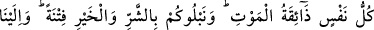
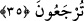

35. Her canlı, ölümü tadar. Bir deneme olarak sizi hayırla da, şerle de imtihan
ederiz. Ve siz, ancak bize döndürüleceksiniz.
“Her canlı, ölümü tadar.” Bu ifade, onların reddedilen ebedî olmaları aleyhine bir
delildir. Âyetteki “nefs”ten murad, nefs-i nâtıka, yâni insânî rûhtur. Onun ölümü, âid
olduğu cesedden ayrılmasıdır. Yâni her insanın rûhu ayrılık acısını tadacatır. Buradaki
zevk/tatmanın gerçek mânâsına alınması mümkün değildir. Çünkü ölüm yenecek bir şey
değildir ki tadılsın. Belki buradaki zevk, özel bir idrâktir. Şu halde onun asıl idraki
anlatmak üzere mecâzen kullanılmış olması mümkündür.
Ölüm, varlıkla ilgili bir sıfattır. Hayatın zıddı olarak yaratılmıştır.
Hak ehlinin ıstılahında ölüm, nefsin hevâsını zapt etmektir. Kim nefsinin hevasını
öldürürse, gerçek anlamda diridir.
Râğıb şöyle demiştir: “Ölümün çeşitleri, hayatın türlerine göre değişir:
1- İnsan, hayvan ve bitkilerde bulunan gelişme kuvvesinin karşılığı olan ölüm.
Nitekim âyette şöyle buyrulmaktadır: “Biliniz ki Allah, ölümünden sonra yeri
diriltir.” (el-Hadîd, 57/17)
2- Hissetme gücünün zâil olması. Nitekim bir âyette şöyle buyrulmuştur: “İnsan;
“Ben öldükten sonra mı, diri olarak kaldırılacağım” diyor.” (Meryem, 19/66)
3- Akıl kuvvesinin zevâli ki bu cehâlettir. Nitekim bir âyette şöyle buyrulmuştur: “Sen
ölülere duyuramazsın.” (en-Neml, 27/80)
4- Hayatı kederli hale getiren hüzün. Nitekim bir âyette şöyle buyrulmuştur: “Her
yandan ona ölüm geldiği halde yine ölemez.” (İbrâhim, 14/17)
5- Uyku. ‘Uyku hafif ölüm, ölüm ise ağır uykudur.’ denir. İşte uyku ile ölüm arasındaki
bu yakınlıktan ötürü Allah, uykuyu “ölüm” diye isimlendirmiş ve şöyle buyurmuştur:
“Geceleyin sizi öldüren (öldürür gibi uyutan) O’dur.” (el-En‘âm, 6/60)
“Her nefis ölümü tadacaktır.” Bu, hayvânî/canlılıkla ilgili kuvvetin yok olmasından
ve ruhun cesedden ayrılmasından ibârettir. (Rağıb Isfahânî’den yapılan özet nakil
burada bitti.)”
et-Ta‘rîfât’ta şöyle der: “Nefis; hayat, his ve irâdî hareket kuvvelerini taşıyan buhârî,
latîf bir cevherdir. Filozoflar onu, “rûh-i hayvânî” diye adlandırmıştır. Çünkü o, bedeni
aydınlatan bir cevherdir. Ölüm ânında bedenin zâhirinden ve bâtınından onun zıyâsı
kesilir. Ölüm ile uyku aynı cinstendir. Çünkü ölüm, ruhun bedenden tamamen ayrılması,
uyku ise rûhun bedenden eksik olarak ayrılışıdır. Hâsılı eğer nefis cevherinin zıyâsı
bedenin zâhirinden ve batınından tam olarak ayrılmamışsa buna “yakaza” denir. Şâyet
bâtınında değil de sâdece zâhirinden ayrılmışsa bu da “uyku”dur. Eğer rûhun ziyası